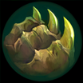

起手組件
- 增幅典籍
提高匕首被動與技能前期傷害。
校正至 7.3d · 2026-10-28。Tier與配置是本站的模式策略判斷，不是官方勝率排名。
起手組件 → 一階鞋或首件核心（依壓力調整）→ 核心成裝 → 鞋子升級 → 情境後續裝。五件成裝加一雙鞋；鞋子兩張圖表示升級前後，不是同時購買兩雙。
提高匕首被動與技能前期傷害。
7.2 後提供高法強與斬殺效果，最適合卡特的殘血收割。
平穿與爆發被動強化第一個擊殺窗口。
大幅放大匕首、瞬步與大絕 AP 收益。
對魔抗前排與戰士仍保有威脅。
卡特蓮娜：在對方關鍵爆發或集火時開啟停滯；停滯期間不能輸出，也需安排結束後的位置。
卡特蓮娜：魔力之靴升級，提供法傷路線的穿透與續航；需按敵方魔防與生存壓力決定完成時機。

三級鞋進一步偏向刺客爆發。

保留最可靠的進退與關鍵技能銜接；雪球戰車進場後仍可用閃現修正位置。

雪球命中後可等待隊友跟上再進場，讓近戰英雄在單線拉扯中擁有穩定的接戰與追擊角度。

瞬步＋匕首＋技能很容易快速觸發。
瞬步頻率高，幾乎每次進場都能吃到收益。

多段技能與匕首連續命中符合卡特收割節奏。
ARAM 擊殺助攻密集，法強堆疊快。

跳入近身時降低第一輪反爆發。
1 技 > 3 技 > 2 技
ARAM 開局三個基礎技能各點 1 級，之後主升 1 技、次升 3 技；大絕能點就點。
先靠 1 技消耗與製造匕首，不要沒有匕首就 3 技跳前排。敵方硬控還在時以等待為主。
無限寶珠＋雷霆風暴後第一輪爆發很高。等隊友把敵人打到七成以下，再找匕首落點連續進出。
一個擊殺就可能整套刷新。先鎖定最容易死的目標取得第一次被動，刷新後立刻換目標；中婭用來拖技能，不是進場前預先開。
敵方護盾很多
替換雷霆風暴或虛空之杖，補破盾。
敵方單一關鍵控制難以躲避
替換一件純傷害裝，提高首次進場成功率。
敵方前排很多且團戰拖很久
替換雷霆風暴，改成較長時間的持續作戰。
標準 ARAM 最後可追溯倍率：Riot 2.6 標準 ARAM：卡特蓮娜傷害輸出 100%→110%。本站未將後續 Hextech／AAA ARAM 專屬承傷調整套入標準 ARAM，因此承傷維持 100%。 本輪核對至7.3d，未以符文大亂鬥倍率覆蓋；官方未提供本英雄完整新版倍率總表，若遊戲內不同以當局模式增益為準。
卡特蓮娜靠匕首落點與三技能反覆位移，拿到擊殺後立即刷新技能接著收割；技能與身法是核心，迷霧與單人強者能把連續位移、保命與大絕爆發再放大。
實戰使用方式：看遊戲增幅卡片下方的官方分類 → 點相同分類 → 優先看 S+／S／A；再依本局增幅方向選擇對應出裝路線。
核心
一、三技能與大絕都是主要傷害來源，技能增幅能直接提高每次重置後的爆發。
核心
三技能可在匕首與目標之間反覆跳躍，身法增幅能高頻觸發。
高適配
連續衝刺後的傷害、防禦與跑速能強化匕首收割節奏。
高適配
施放大絕無敵、技能暴擊與保命類單卡能顯著提高大絕成功率。
適配
短時間多段技能傷害可以快速觸發雷霆系列。
適配
每次重置後快速移動到下一個匕首或殘血目標會更安全。
技能／身法／迷霧增幅多
無限寶珠與雷霆風暴提高第一個擊殺門檻，再用高法強、法穿與中婭完成連續收割。 本路線已同步7.3c的一般裝備；增幅專屬替換另依抽卡決定。
7.2 後提供高法強與斬殺效果，最適合卡特的殘血收割。
平穿與爆發被動強化第一個擊殺窗口。
大幅放大匕首、瞬步與大絕 AP 收益。
對魔抗前排與戰士仍保有威脅。
卡特蓮娜：在對方關鍵爆發或集火時開啟停滯；停滯期間不能輸出，也需安排結束後的位置。
卡特蓮娜：魔力之靴升級，提供法傷路線的穿透與續航；需按敵方魔防與生存壓力決定完成時機。
三級鞋進一步偏向刺客爆發。
敵方爆發較高
加入峽谷製造者，提高第一輪進場後等待匕首與刷新時的續戰。
7.2 後提供高法強與斬殺效果，最適合卡特的殘血收割。
敵方前排很多且團戰拖很久
替換雷霆風暴，改成較長時間的持續作戰。
大幅放大匕首、瞬步與大絕 AP 收益。
對魔抗前排與戰士仍保有威脅。
卡特蓮娜：在對方關鍵爆發或集火時開啟停滯；停滯期間不能輸出，也需安排結束後的位置。
卡特蓮娜：魔力之靴升級，提供法傷路線的穿透與續航；需按敵方魔防與生存壓力決定完成時機。
三級鞋進一步偏向刺客爆發。
分類與單卡評級是本站條件式建議。新卡完整效果未核實時不補造數值；當局抽到的卡片會改變優先順序。
7.3d／2026-10-28：本輪核對公告共通差異、現行裝備與符文引用，保留 v123 的既有攻略。標準 ARAM 倍率沿可追溯歷史基準，未套用符文大亂鬥專屬倍率；Tier 為本站建議，非新版勝率或全技能實測。